Want to start a trip? Click the flag on the right to log in!
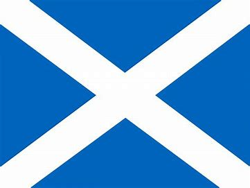
Let's go to Scotland together!
Talking about Scotland,the first thing that comes into my mind must be the Royal Regiment of Scotland.
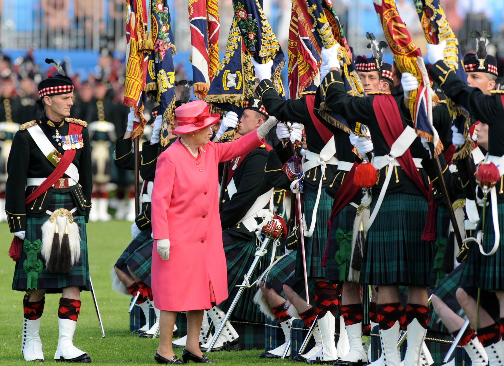
Scotland (Scottish Gaelic: Alba) is one of the four countries of the United Kingdom. Scotland is the northern third of Great Britain (an island in the North Atlantic Ocean). Many other islands in the British Isles are also part of Scotland. To the south of Scotland is England, the North Sea is to the east, the Atlantic Ocean is to the west and the Irish Sea is to the south-west.
Let's go through Scotland together!
The capital city of Scotland is Edinburgh on the east coast, but the biggest city is Glasgow on the west coast. Other cities in Scotland are Aberdeen, Dundee, Inverness, Perth and Stirling. About five million people live in Scotland. Most of the population lives in the Central Belt, an area between the Scottish Highlands and the Scottish Lowlands.
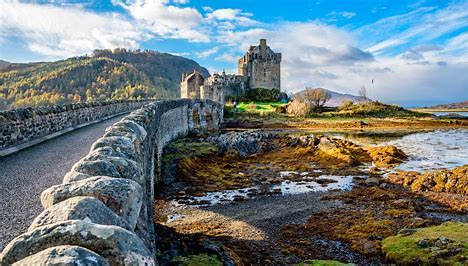
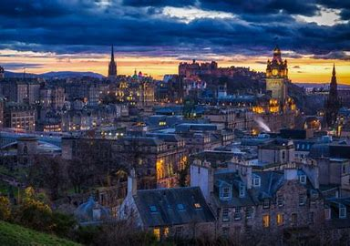
Whisky made in Scotland is known as Scotch whisky, or simply as "Scotch" (especially in North America). It means the whisky is distilled in Scotland. It is usually a blend of malt and grain whiskies, and aged in barrels ('casks') for at least three years (four years for exports)
All of the whisky has been made from single batch of malt in one single distillery. They have been matured in oak barrels, usually 6 to 24 years. Glenfiddich is the world's best-selling single malt whisky. It comes from Speyside in the Scottish Highlands, and accounts for 35% of world sales. The Glenlivet comes second, from the same area. Thus, despite all attempts at competition, this small area near the Spey River still dominates the world market for single malt whisky.
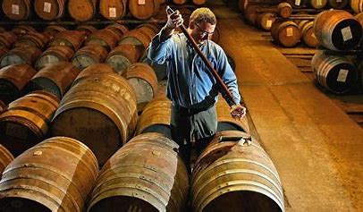
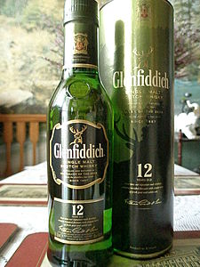
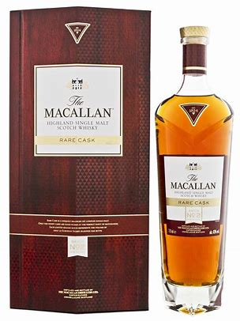
A Scotch is a mixture of various single malts. This is the most common type of whisky. Famous blended whiskys are Johnnie Walker, Chivas Regal, Ballantines, J&B, The Famous Grouse and Vat-69. In the United States the word "scotch" refers to the blended whiskys of Scotland. Blenders do not distill whisky, but mix various single malts.
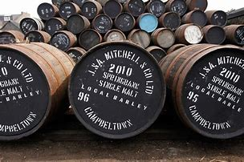
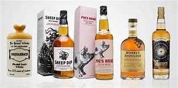
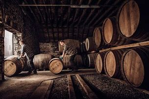
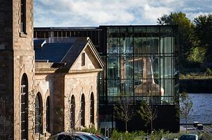
As name implies, rye whiskey is made from rye malt. These are especially popular in Canada. Famous Canadian rye whiskeys are Canadian Club and Alberta Premium.
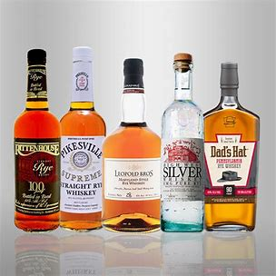
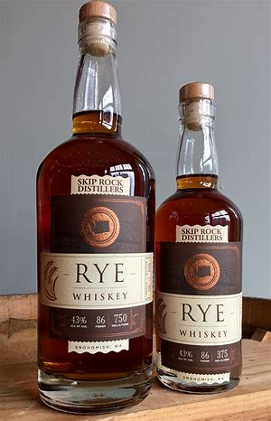
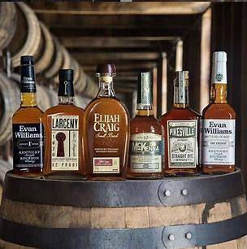
These are blended whiskeys from Ireland.
Short video to summarize